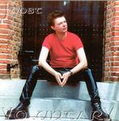

| Artist: | Joost |
| Title: | Voluntary |
| Label: | Joost Music |
| Length(s): | 53 minutes |
| Year(s) of release: | 2005 |
| Month of review: | [01/2006] |
| 1) | Magic Lantern | 4.40 |
| 2) | Sanguis Christi | 6.53 |
| 3) | What You Could Be | 4.18 |
| 4) | Cylia - Futari No Ikizumari | 5.15 |
| 5) | Aozora - Blue Sky | 5.01 |
| 6) | Jenny - Deaf Girl | 3.16 |
| 7) | Burning The Torn Shell | 6.19 |
| 8) | Follow Your Dreams | 3.55 |
| 9) | Beautycage | 5.58 |
| 10) | Bound | 3.11 |
| 11) | Flight | 4.42 |
Sanguis Christi is not only the longest, but also one of the unreleased tracks. It opens with swirly, stately keyboards. The song has a very good vocal melody in the chorus, while the verses are sung in a fast, unmelodious fashion. Some of the guitar play reminds me strongly of Twelfth Night. Joost does not have a particularlu good voice, but he does show emotion in his singing. During the song the fire in the song heightens. The end features some sampled sound effects that are usually only heard in hip-hop songs. It does give the songs an added flavour.
What You Could Be opens catchily with screamy guitar elements, Joost uses guitar effects quite a bit. The vocal passages are pacey with the programmed sequences going in the back. The style of the song is more in the line of Depeche Mode, with elements of punkrock. Past halfway, the pace diminishes and we get a synthrock intermezzo.
Cylia (Futari No Ikizumari) opens with quiet vocals and soft rhythm guitar in the back. Then sets in the excellent, somewhat melodramatic chorus. The verses in between are only for telling the story. There could be more drive coming from the drums.
For some reason, Joost sometimes reminds me of American punkrock singers. Aozora - Blue Sky is also one of the catchier, compact rock songs. Not that the song is devoid of melody, but the pace and instrumentation are simply more straightforward. The pace is really high, but for some reason I am thinking more of the Cardiacs here, until we come to the powermetal style chorus. The final part is quite romantic though.
Jenny - Deaf Girl is a short acoustic ballad, somewhat tragic and quite a difference from the pacey metal of the previous song. Burning The Torn Shell opens quietly but soon we arrive at a plodding guitar passage. The vocals are almost accidental, and more spoken than sung. The melody does strongly remind me of some of the material I just heard. This is quite a heavy track, borrowing from the heavier side of Metallica. The vocals drown a bit and the vocal melody is not that special, except the chorus which is more outspoken.
Follow Your Dreams is one of the new songs, at least it is unreleased. It is a pacey and light tune with vocals and fast acoustic guitar. The chorus is a bit heavier, but all in all this is way to poppy and the melody is too lightweight. The guitar lines remind of U2.
Beautycage is one of the longer songs but has some trouble getting underway. I guess the melody is a bit too understated. At times the music livens up a bit for the chorus, but these are short. Bound is short bouncy punkrock song. Flight on the other hand opens with pan flute sounds. This is a rather mellow closer with a bouncy, waltzy melody and vibrant guitar work. The main melody is a good one.